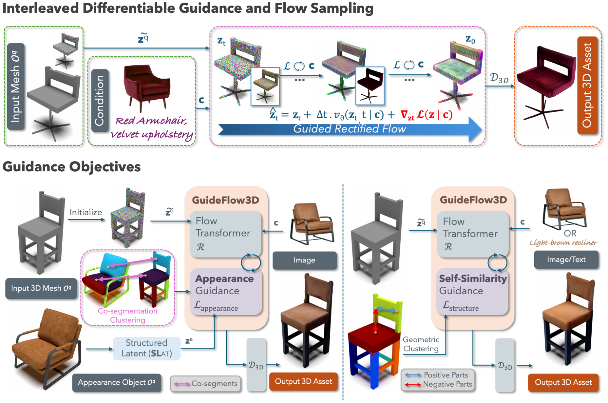

Optimization-Guided Rectified Flow For Appearance Transfer
Transfers fine-grained texture and material details through part-aware correspondence between shapes.
Captures coherent structure and detail by guiding transfer through internal self-similarity cues.
Seamlessly stylize objects while preserving their geometry and spatial layout for interactive 3D context-aware scene restyling.

We introduce GuideFlow3D, a training-free framework for 3D appearance transfer that enables fine-grained control over both geometry and texture, even across objects with large shape differences. Unlike prior 3D style transfer methods that require retraining or rely on multi-view diffusion, our approach directly steers a pretrained 3D generative model during inference through guided rectified flow sampling. This mechanism interleaves latent flow updates with differentiable optimization, allowing the model to adaptively incorporate new guidance objective without modifying its learned parameters.
During the denoising process, we apply two complementary guidance strategies: (i) a part-aware appearance loss that co-segments the input and appearance objects to align textures and geometry across corresponding parts, and (ii) a self-similarity loss that enforces internal consistency in local regions when appearance cues are derived from text or images. This unified design allows our framework to seamlessly transfer material and structural details from diverse modalities such as 3D meshes, images, or natural language, onto new geometries. As a result, it bridges the gap between geometric and perceptual style transfer in 3D, producing coherent, detailed assets robust to large geometric variations. Its training-free formulation and structured latent design make it efficient, versatile, and easily extendable to new forms of guidance for controllable 3D generation.
Several concurrent works explore related directions in 3D appearance transfer and generation. Check them out!
- TriTex learns a volumetric texture field from a single textured mesh by mapping semantic features to surface colors.
- TextureDreamer transfers relightable textures from a small number of input images using an image-guided texture synthesis method.
If you find our work useful, please consider citing:
@inproceedings{sayandsarkar_2025_guideflow3d, author = {Deb Sarkar, Sayan and Stekovic, Sinisa and Lepetit, Vincent and Armeni, Iro}, title = {GuideFlow3D: Optimization-Guided Rectified Flow For 3D Appearance Transfer}, booktitle = {Advances in Neural Information Processing Systems (NeurIPS)}, year = {2025}, }
Ethical Considerations
Next to the exciting possibilities, there are considerable risks that should be addressed including
manipulation and Deepfakes for spreading misinformation, concerns regarding
intellectual property, and bias amplifications. Ethical usage of our method includes
aspects of disclosing when 3D content is generated using AI, respecting and attributing
source content licenses, and building systems for understanding biases are some of the ways
for tackling these issues.
Acknowledgements
We thank Nicolas Dufour and Arijit Ghosh from Imagine Labs for helpful discussions on universal guidance, and Liyuan Zhu and Jianhao Zheng from
Gradient Spaces Research Group for help with conducting the user study.
Website template inspired by TRELLIS.